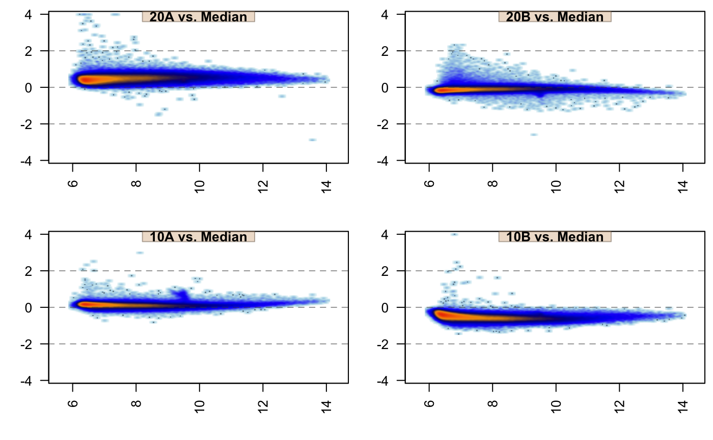

Produce MA-plot of omics data.
jammaplot(
x,
assay_name = NULL,
maintitle = NULL,
titleBoxColor = "#DDBB9977",
subtitleBoxColor = titleBoxColor,
centerGroups = NULL,
controlSamples = colnames(x),
useMedian = FALSE,
useMean = NULL,
ylim = c(-4, 4),
xlim = NULL,
highlightPoints = NULL,
outlierMAD = 5,
outlierRowMin = 5,
displayMAD = FALSE,
groupedMAD = TRUE,
colramp = c("white", "lightblue", "blue", "navy", "orange", "orangered2"),
colrampOutlier = NULL,
outlierColor = "palegoldenrod",
whichSamples = NULL,
maintitleCex = 1.8,
subtitle = NULL,
subtitlePreset = "bottomleft",
titleCexFactor = 1,
titleCex = NULL,
doTitleBox = TRUE,
titleColor = "black",
titleFont = 2,
titlePreset = "top",
xlab = "",
xlabline = 2,
ylab = "",
ylabline = 1.5,
groupSuffix = NULL,
highlightPch = 21,
highlightCex = 1.5,
highlightColor = "#00AAAA66",
doHighlightPolygon = FALSE,
highlightPolygonAlpha = 0.3,
doHighlightLegend = TRUE,
smoothPtCol = "#00000055",
margins = c(3.5, 2, 0.3, 0.2),
useRaster = TRUE,
ncol = NULL,
nrow = NULL,
doPar = TRUE,
las = 2,
groupedX = TRUE,
customFunc = NULL,
filterNA = TRUE,
filterNAreplacement = NA,
filterNeg = TRUE,
filterFloor = 0,
filterFloorReplacement = filterFloor,
transFactor = 0.18,
nrpoints = 0,
smoothScatterFunc = jamba::plotSmoothScatter,
applyRangeCeiling = TRUE,
doTxtplot = FALSE,
ablineV = 0,
ablineH = c(-2, 0, 2),
blankPlotPos = NULL,
fillBackground = TRUE,
useRank = FALSE,
ma_method = c("jammacalc", "old"),
doPlot = TRUE,
verbose = FALSE,
...
)
Arguments
| x |
numeric object usually a matrix that contains
values with measurement rows, and sample/observation columns.
For example, with gene or protein expression data, the genes
or proteins (or the assays of genes or proteins) are
represented in rows, and obtained samples are represented
in columns. Alternatively x can be SummarizedExperiment
object, used alongside argument assay_name.
|
| assay_name |
character used when x is a
SummarizedExperiment object, to determine which assay
matrix to use for the MA plots. When assay_name=NULL
the first assay entry is used, for example assays(x)[[1]].
|
| maintitle |
character string with the title displayed above
all individual MA-plot panels. It will appear in the top outer
margin.
|
| titleBoxColor, subtitleBoxColor |
character vector of
R colors used as background color for each panel title text,
or subtitle text respectively. The subtitle appears in the
bottom-left corner, and usually indicates the center groups
as defined by centerGroups.
|
| centerGroups |
character vector of groups passed to
jamma::centerGeneData() which determines how data is centered.
Each group is centered independently, to enable visual
comparisons within each relevant centering group.
It is useful to center within batches or within
subsets of samples that are not intended to be compared to
one another.
Another useful alternative is to center by each sample
group in order to view the variability among group
replicates, which should be much lower than variability across
sample groups. See centerGeneData() for more specific examples.
|
| controlSamples |
character vector of colnames(x) passed
to centerGeneData() which defines the control samples during
the data centering step.
By default, and the most common practice, MA-plots are
calculated across all samples, which effectively uses all
colnames(x) as controlSamples.
However, it is quite useful sometimes to provide a subset of
samples especially if there are known quality samples, to which
new samples of unknown quality are being compared.
|
| useMedian |
logical indicates whether to center data
using the median value, where useMedian=FALSE by default.
For consistency, this argument is preferred to useMean which
is deprecated and will be removed in future. The median is
preferred in cases where outliers should not influence the
centering. The mean is preferred in cases where the data
should visualize data consistent with downstream parametric
statistical analysis. When a particular sample
is a technical outlier, one option is to define
controlSamples to exclude the outlier sample(s), so
the data centering will be applied using the non-outlier
samples as reference.
|
| useMean |
logical (deprecated), use useMean. This argument
indicates whether to center data using the mean value.
When useMean=NULL the argument useMedian is preferred.
For backward compatibility, when useMean is not NULL,
then useMedian is defined by useMedian <- !useMean.
|
| ylim, xlim |
NULL or numeric vector length=2 indicating
the y-axis and x-axis ranges, respectively. The values are useful
to define consistent dimensions across all panels. The
default ylim=c(-4,4) represents 16-fold up and down range in
normal space, and is typically a reasonable starting point for
most purposes. Even if numeric values are all between
-1.5 and 1.5, it is still recommended to keep a range in
context of c(-4, 4), to indicate that the observed values
are lower than typically observed. The c(-4, 4) may be adjusted
relative to the typical ranges expected for the data.
It is sometimes helpful to define xlim slightly above zero for
datasets that have an extremely large proportion of zeros, in order
to reduce the visual effect of having that much point density at
zero, for example with xlim=c(0.001, 20) and
applyRangeCeiling=FALSE.
|
| highlightPoints |
NULL, or character vector, or a
list of character vectors indicating rownames(x) to
highlight in each MA-plot panel. When NULL, no points are
highlighted; when character vector, points are highlighted in
all MA-plot panels; when list of character vectors, each
character vector in the list is highlighted using a unique
color in highlightColor. Points are drawn using
graphics::points() and colored using highlightColor,
which can be time-consuming for a large number of highlight
points.
|
| outlierMAD |
numeric threshold above which a MA-plot panel
MAD factor is considered an outlier. When a MA-plot panel is
considered an outlier, the outlierColramp or outlierColor
is applied to the panel color ramp to display a visual
indication.
|
| outlierRowMin |
numeric value indicating the minimum mean
value as displayed on the MA-plot panel x-axis, in order for
the row to be included in MAD calculations. This argument is
intended to prevent measurements whose mean value is below
a noise threshold from being included, therefore only including
points whose mean measurement is above noise and represents
"typical" variability.
|
| displayMAD |
logical indicating whether to display each
MA-plot panel MAD factor (median absolute deviation). A MAD
value for each panel is calculated by taking the median absolute
deviation from zero across all points, using points whose mean
value is equal or greater than outlierRowMin. The overall MAD
is defined by the median MAD from the MA-plot panels. The MAD
factor is defined as the ratio of each MA-plot panel MAD value
to the overall MAD value, and therefore most MAD factor values
should be roughly 1. The overall MAD value is defined by the
median across all samples when groupedMAD=FALSE, or defined
within each centerGroup when groupedMAD=TRUE. A value
with MAD factor 2 is interpreted as a sample whose median
deviation from zero is twice as high as the typical sample,
which is a reasonably indication that this sample has twice
the inherent level of noise compared to other samples. Note
that MAD values should be interpreted within sample processing
batches if relevant, or within logical experimental units --
roughly interpreted to mean sets of samples within which direct
statistical comparisons are intended to be applied. For example,
gene expression data that include brain and liver samples would
probably use centerGroups for brain and liver to be centered
separately, therefore the MAD factors should be separately
calculated for brain and for liver.
|
| groupedMAD |
logical indicating how the MAD calculation
should be performed: groupedMAD=TRUE will calculate the
median MAD and corresponsing MAD factor within each
centerGroups grouping; groupedMAD=FALSE will calculate
one overall median MAD, and corresponding MAD factor values
will be performed across all samples. |
| colramp |
one of several inputs recognized by
jamba::getColorRamp(). It typically recognizes either the name of
a color ramp from RColorBrewer, the name of functions from the
viridis package such as viridis::viridis(), or single R colors, or
a vector of R colors. When a single color is supplied, a gradient
is created from white to that color, where the default base color
can be customized with defaultBaseColor="black" for example. |
| colrampOutlier |
one of several inputs recognized by
jamba::getColorRamp() to define a specific color ramp for
MA-plot outlier panels, used when outlierMAD is defined.
When colrampOutlier is NULL the outlierColor is used. |
| outlierColor |
character string representing one R color,
used when colrampOutlier is NULL and when outlierMAD is
defined. This color is used for MA-plot outlier panels by
substituting the first color from the colramp color ramp,
to act as a visual cue that the panel represents an outlier.
|
| whichSamples |
NULL or integer vector, representing
an index subset of samples to include in the MA-plots. When
whichSamples represents a subset of samples in x, the
MA-plot calculations are performed on all samples, then only
samples in whichSamples are displayed. This argument keeps
the MA-plot calculations consistent even when viewing only
one or a subset of samples in more detail.
|
| maintitleCex |
numeric cex character expansion used to
resize the maintitle.
|
| subtitle |
NULL or character vector to be drawn at
the bottom left corner of each plot panel, the location
is defined by subtitlePreset.
|
| subtitlePreset |
character value describing where to position the
subtitle, using terms valid in jamba::coordPresets(). The default
subtitlePreset="bottomleft" places the subtitle at the
bottom left corner of each plot panel. |
| doTitleBox |
logical indicating whether to draw plot
titles using a colored box. When doTitleBox=TRUE the
jamba::drawLabels() is called to display a label box at
the top of each plot panel, with drawBox=TRUE. When
doTitleBox=FALSE, jamba::drawLabels() is called with
drawBox=FALSE.
|
| titleColor |
character vector of colors applied to title text
in each MA-plot panel. When doTitleBox=TRUE and titleColor
contains only one or no value, the title color is defined by
jamba::setTextContrastColor() along with titleBoxColor.
|
| titleFont |
integer font compatible with par("font").
Values are recycled across panels, so each panel can use a custom
value if needed.
|
| titlePreset |
character value describing where to position the
subtitle, using terms valid in jamba::coordPresets().
The default titlePreset="top" centers the label at the
top of each panel.
|
| xlab, ylab |
character x- and y-axis labels, respectively.
The default values are blank "" because there are a wide variety
of possible labels, and the labels take up more space
than is often useful for most MA-plots.
|
| xlabline, ylabline |
numeric number indicating the text line
distance from the edge of plot border to place xlab and ylab
text, as used by graphics::title().
|
| groupSuffix |
character text appended to each MA-plot
panel title. This argument is deprecated in favor of
using subtitle to place additional text at the bottom left
corner of each MA-plot panel.
|
| highlightCex |
numeric value recycled to length(highlightPoints)
indicating the highlight point size.
|
| highlightColor |
character vector used when highlightPoints
is defined. It is recycled to length(highlightPoints) and
is applied either to
|
| doHighlightPolygon |
logical indicating whether to draw
a shaded polygon encompassing highlightPoints, using
highlightColor.The polygon is defined by grDevices::chull()
via the function points2polygonHull().
|
| highlightPolygonAlpha |
numeric value indicating alpha
transparency, where 0 is fully transparent, and 1 is completely
not transparent.
|
| doHighlightLegend |
logical indicating whether to print a
color legend when highlightPoints is defined. The legend is
displayed in the bottom outer margin of the page using
outer_legend(), and the page is adjusted to add bottom
outer margin.
|
| smoothPtCol |
color used to draw points when nrpoints is
non-zero, which draws points in the extremities of the
smooth scatter plot. See jamba::plotSmoothScatter().
The effect can also be achieved by adjusting transFactor to
a lower value, which increases the visual contrast of individual
points in the point density.
|
| margins |
numeric vector of margins compatible with
graphics::par("mar"). Default values
are applied, but provided here for convenience.
|
| useRaster |
logical indicating whether to draw the
smooth scatter plot using raster logic, useRaster=TRUE is
passed to jamba::plotSmoothScatter(). The default TRUE
creates a much smaller plot object by rendering each plot
panel as a single raster image instead of rendering individual
colored rectangles.
|
| ncol, nrow |
integer number of MA-plot panel columns and rows
passed to graphics::par("mfrow") when doPar=TRUE. When only one
value is supplied, nrow or ncol, the other value is defined
by ncol(x) and blankPlotPos so all panels can be contained on
one page. When nrow and ncol are defined such that multiple
pages are produced, each page will be annotated with maintitle
and doHighlightLegend as relevant.
|
| doPar |
logical indicating whether to apply
graphics::par("mfrow") to define MA-plot panel rows and columns.
When doPar=FALSE each plot panel is
rendered without adjusting the graphics::par("mfrow") setting.
|
| las |
integer value 1 or 2 indicating whether axis labels
should be parallel or perpendicular to the axes, respectively.
|
| customFunc |
NULL or function used instead of mean or
median during the data centering step to generate a row summary
statistic. It should take matrix input, and return a numeric vector
output summarizing each row in x, to be subtracted from each
numeric value by row in x. It is intended to
provide custom row statistics, for example geometric mean, or other
row summary function.
|
| filterNA, filterNAreplacement |
logical and vector respectively.
When filterNA=TRUE, all NA values are replaced with
filterNAreplacement, which can be helpful to handle NA values
as zero 0 for example. In reality, NA values should probably
be left as-is, so subsequent data centering does not use these values,
and so the MA-plot panel does not draw a point when no measurement
exists.
|
| filterNeg |
logical deprecated argument, use filterFloor
instead. The filterNeg indicates whether to change all negative
values to zero 0 before proceeding with data centering.
Negative values are often the result of measurements
being below a noise threshold in upstream data processing,
and therefore the magnitude of negative value is usually
either not informative, or not on similar scale as positive
values.
When filterNeg=TRUE, negative values are set to zero, and
can result in a characteristic 45 degree angle line originating at
x=0 extending to the right.
|
| filterFloor, filterFloorReplacement |
numeric or NULL indicating
a numeric floor, where values in x at or below filterFloor are
replaced with filterFloorReplacement. Note that this argument
can be used to replace zero 0 with NA in the event that
zeros do not represent measurements. One can typically tell whether
input data includes zero 0 values by the presence of characteristic
45-degree angle lines originating from x=0 angled to the right.
The default values replace any values at or below zero with zero,
which also applies a numeric floor to negative values.
For some platform data technologies, it can be useful to define a
filterFloor roughly equivalent to its noise threshold. For example
quantitative PCR sometimes uses log_expression = (40 - Ct), where
Ct values above 35 are considered to be noise. That noise threshold
implies that any expression values 5 or lower are roughly
equivalent noise, so applying filterFloor=5 is appropriate.
|
| transFactor |
numeric adjustment to the visual density of
points by jamba::plotSmoothScatter(). The value is based upon
graphics::smoothScatter() argument transformation which uses
function(x)x^0.24. The transFactor is equivalent to the
exponential in the form: function(x)x^transFactor. Lower values
increase the visual density more intense, higher values make the
visual density less intense.
|
| nrpoints |
integer or NULL indicating the number of points
to display on the extremity of the smooth scatter density,
passed to jamba::plotSmoothScatter().
|
| smoothScatterFunc |
function used for the smooth scatter plot,
default jamba::plotSmoothScatter(). Note that a custom function
may not recognize nrpoints or transformation.
|
| applyRangeCeiling |
logical passed to
jamba::plotSmoothScatter() which determines how to handle points
outside the plot x-axis and y-axis range: applyRangeCeiling=TRUE
will place points at the border of the plot, which is helpful
to indicate that there are more points outside the viewing range;
applyRangeCeiling=FALSE will crop and remove points outside
the viewing range, which is helpful for example when a large
number of points are at zero and overwhelm the point density.
When there are a large proportion of values at zero, it
can be helpful to apply xlim=c(0.01, 20) and
applyRangeCeiling=FALSE.
|
| doTxtplot |
logical not yet implemented, indicating whether
to plot results using colored text output.
|
| ablineH, ablineV |
numeric vector indicating horizontal and
vertical lines to draw in each MA-plot panel, respectively.
These values are passed to graphics::abline().
|
| blankPlotPos |
NULL or integer vector indicating
plot panel positions to be drawn blank, skipped. Blank panel
positions are intended to help customize the visual alignment
of MA-plot panels. The mechanism is similar to ggplot2::facet_wrap()
except that blank positions can be manually defined by what makes
sense to the experiment design.
|
| fillBackground |
logical passed to jamba::plotSmoothScatter()
indicating whether to fill the plot panel with the background color,
using the first value in the color ramp for each MA-plot panel.
|
| useRank |
logical indicating whether to create column-wide
ranks, then create MA-plots using the rank data. When useRank=TRUE
the y-axis represents the rank difference from mean, and the
x-axis represents the mean rank. Using useRank=TRUE is a good
method to evaluate whether data can be normalized, or whether
data across samples is inherently noisy.
|
| ma_method |
character string indicating whether to perform
MA-plot calculations using the old method "old"; or "jammacalc"
which uses the function jammacalc(). |
| doPlot |
logical indicating whether to create plots. When
doPlot=FALSE only the MA-plot panel data is returned.
|
| verbose |
logical indicating whether to print verbose output. |
| ... |
additional parameters sent to downstream functions,
jamba::plotSmoothScatter, centerGeneData. |
Value
list of numeric matrix objects, one for each MA-plot,
with colnames "x" and "y". This list is sufficient input
to jammaplot() to re-create the full set of MA-plots.
Details
jammaplot takes a numeric matrix, typically of gene expression data,
and produces an MA-plot (Bland-Altman plot), also known as a
median-difference plot. One panel is created for each column of
data. Within each panel, the x-axis represents the mean or median
expression of each row; the y-axis represents the difference from
mean or median for that column.
By default, the plot uses jamba::plotSmoothScatter(), with optional
highlighted points draw using points().
The function will determine an appropriate layout of plot panels,
which can be overridden using ncol and nrow to specify the
number of columns and rows of plot panels, respectively. For now,
this function uses base R graphics instead of ggplot2, in order
to accomodate some custom features.
This function uses "useRaster=TRUE" by default, which causes
jamba::plotSmoothScatter() to render a rasterized image as opposed
to a composite of colored rectangles. This process substantially
reduces the render time in all cases, and reduces the image size
when saving as PDF or SVG.
Notable features
Highlighting points
Specific points can be highlighted with argument highlightPoints
which can be a vector or named list of vectors, containing rownames(x).
When using a list, point colors are assigned to each element in the
list in order, using the argument highlightColor.
Centering by control samples
Typical MA-plots are "global-centered", which calculates the
mean/median across all columns in x, and this value is subtracted
from each individual value per row.
By specifying controlSamples
the mean/median is calculated using only the colnames(x) which match
controlSamples, thus representing "difference from control."
It may also be useful to center data by known high-quality samples,
so the effect of potential outlier samples is avoided.
Centering within subgroups
By specifying centerGroups as a vector of group names,
the centering is calculated within each group of colnames(x).
In this way, subsets of samples can be treated independently in
the MA-plots. A good example might be producing MA-plots for
"kidney" samples, and "muscle" samples, which may have
fundamentally different signal distributions. A good rule
of thumb is to apply centerGroups to represent separate
groups of samples where you do not intend to apply direct
statistical comparisons across those samples, without at
least applying a two-way contrast, a fold change of fold
changes.
Another informative technique is to center by sample group,
for example centerGroups=sample_group.
This technique produces MA-plots that depict the
"difference from group" for each sample replicate of a sample
group, and is very useful for identifying sample replicates
with markedly higher variability to its sample group than
others. In general, the variability within sample group
should be substantially lower than variability across
sample groups. Use displayMAD=TRUE and outlierMAD=2
as a recommended starting point for this technique.
Applying a noise floor
The argument filterFloor provides a numeric lower threshold,
where individual values at or below this threshold are
set to a defined value. The default defined value is the
floor itself, which has the effect of removing information from
points that are already below the noise threshold and therefore
are unreliable for this purpose.
Another useful alternative
is to define filterFloor=0 and filterFloorReplacement=NA
so that values of zero 0 are set to NA and are not included
in the MA-plot calculations, and are not represented as points
in each MA-plot panel. For data with many sparse missing values
represented as zero, these options can be very helpful because
each MA-plot panel will only represent actual measurements,
compared to only those sample which also have actual
measurements for those rows.
Customizing the panel layout
Panels are drawn using the order of colnames(x) by row,
from left-to-right, then top-to-bottom.
The argument blankPlotPos is intended to insert an empty panel
at a particular panel position, to help customize the alignment
of sample panels.
This option is typically used with ncol and nrow to define
a fixed layout of panel columns and rows. blankPlotPos refers
to panels numbered as drawn per row of panels,
Identifying potential sample outliers
Use argument displayMAD=TRUE to display the per-sample MAD factor
relative to its centerGroups value, if provided. The MAD value
for each MA-plot panel is calculated using rows whose mean
is at or above outlierRowMin. The median MAD value is calculated
for each centerGroups grouping when groupedMAD=TRUE, by default.
Finally, each MA-plot panel MAD factor is the ratio of its MAD value
to the relevant median MAD value. MA-plot panels with MAD factor
above outlierMAD are considered outliers, and the color ramp
uses outlierColramp or outlierColor as a visual cue.
Putative outlier samples should usually not be determined
when:
controlSamples are defined to include only a subset
of sample groups,
centerGroups is not defined, or represents more than one
set of sample groups that are not intended to be statistically
compared directly to one another.
Putative outlier samples may be defined when:
Potential sample outliers may be identified by setting a threshold
with outlierMAD, by default 5xMAD. For a sample to be considered
an outlier, its median difference from mean/median needs to be
five times higher than the median across samples.
We typically recommend an outlierMAD=2 when centering
by sample groups, or when centering within experiment subsets.
For one sample to have 2xMAD factor, its variance needs
to be uniquely twice as high as the majority of other samples, which
is typically symptomatic of possible technical failure.
There are exceptions to this suggested guideline, which includes
scenarios where a batch effect may be involved.
To do:
Accept other object types as input, including Bioconductor
classes: ExpressionSet, SummarizedExperiment,
MultiExperimentSet
Make it efficient to convey group information, for example
define titleBoxColor with group colors, allow centerByGroup=TRUE
which would re-use known sample group information.
Adjust the suffix to indicate when centerGroups are being
used. For example indicate 'sampleID vs groupA' instead of
'sampleID vs median'.
See also
Examples
#> Package LibPath Item
#> [1,] "affydata" "/Users/wardjm/Library/R/3.6/library" "Dilution"
#> Title
#> [1,] "AffyBatch instance Dilution"
